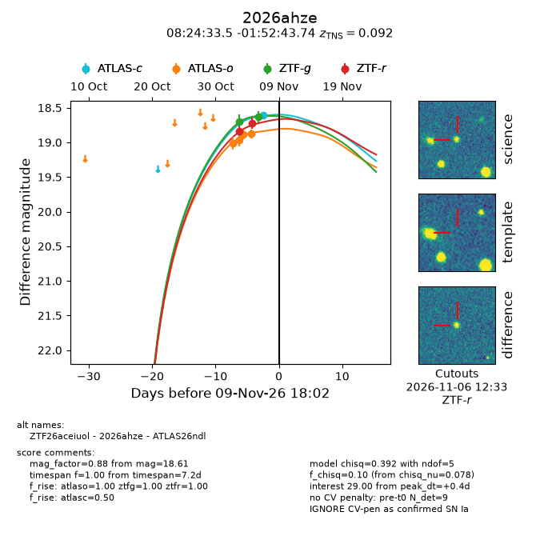
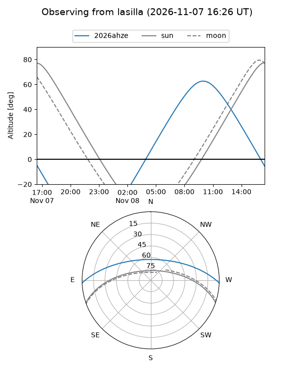
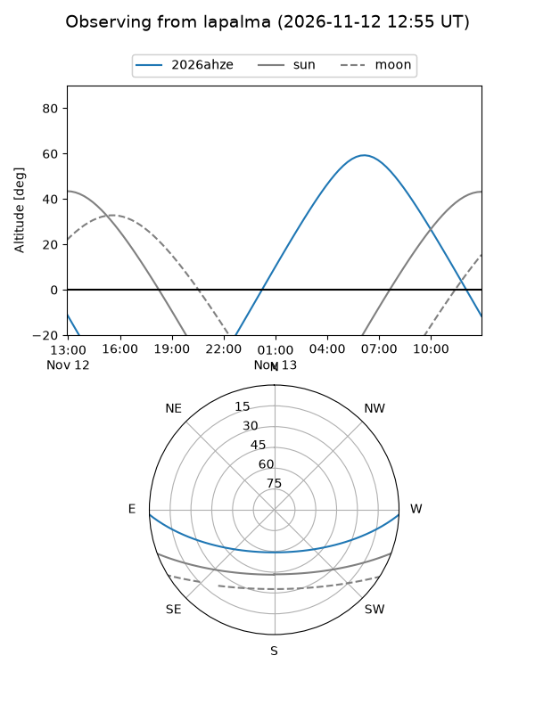
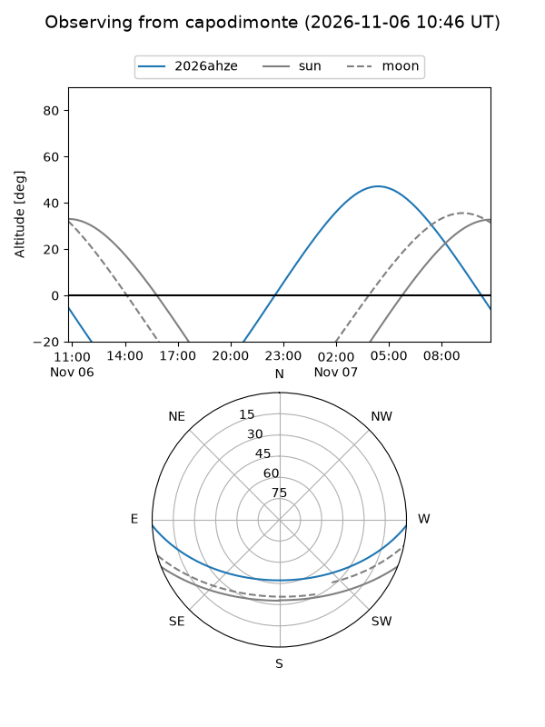
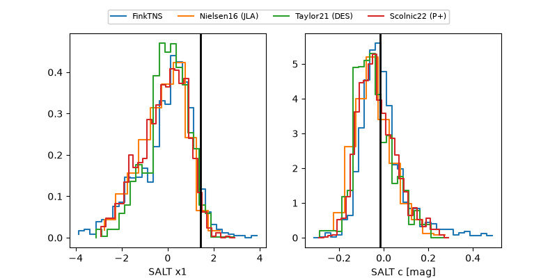

2026ahze
Target 2026ahze at 2026-11-09 18:04
Aliases and brokers:
FINK-ZTF: ztf.fink-portal.org/ZTF26aceiuol
Lasair-ZTF: lasair-ztf.lsst.ac.uk/objects/ZTF26aceiuol
ALeRCE-ZTF: alerce.online/object/ZTF26aceiuol
YSE-PZ: ziggy.ucolick.org/yse/transient_detail/2026ahze
TNS name: wis-tns.org/object/2026ahze
Direct TNS query: direct search
alt names
ZTF26aceiuol (ztf,fink_ztf)
2026ahze (tns,yse)
ATLAS26ndl (atlas)
Coordinates:
equatorial (ra, dec) = 126.1394,-1.87882
equatorial (HMS+DMS) = 08:24:33.46,-01:52:43.74
galactic (l, b) = (225.7742,+19.67022)
Flags:
TNS type: SN Ia
TNS redshift: 0.0920
peak dt: +0.4
Photometry:
last atlasc=18.61, atlaso=18.88, ztfg=18.63, ztfr=18.72
1 atlasc, 4 atlaso, 2 ztfg, 2 ztfr detections
Lightcurve

Visibility



Additional plots
